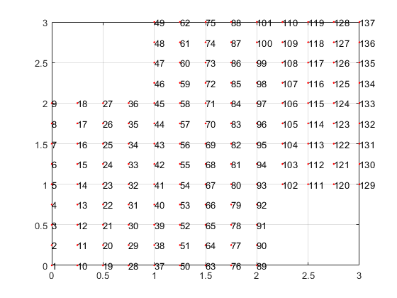
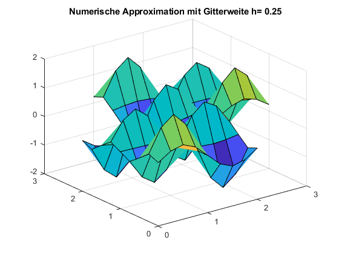
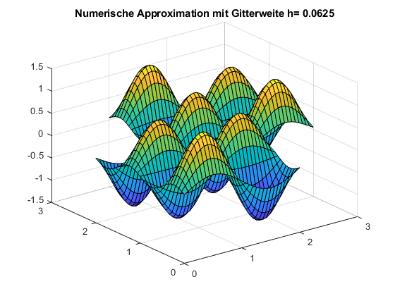
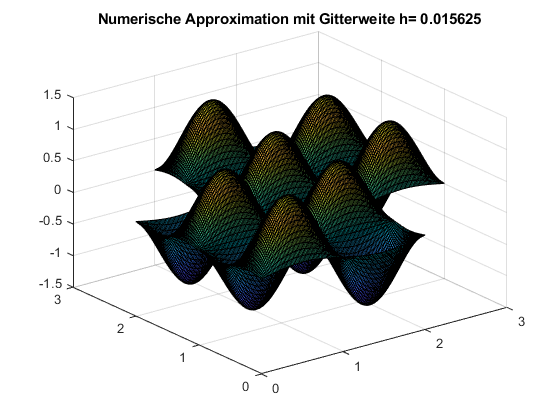
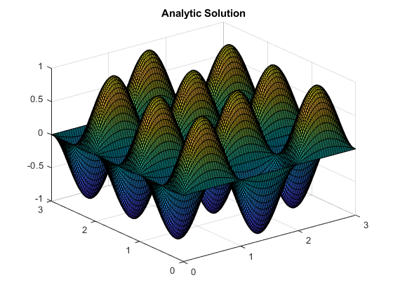
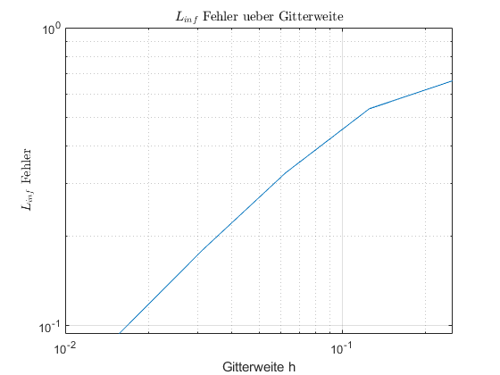

Abgabe des zweiten Programmierblatts von Sven Ullmann (3467077) und Thomas Stegmeyer (3401787)
Contents
Aufgabe 1
Die Funktionsweise von 1a) wird über die restlichen Aufgaben demonstriert. Die Funktion, um das Gitter zu bauen sieht wie folgt aus
type 'buildGitter.m'
function Omega = buildGitter(h)
knots = 3/h+1;
Omega = zeros(knots,knots,3);
counter = 1;
for i=1:knots
for j=1:knots
Omega(i,j,1) = (i-1)*h;
Omega(i,j,2) = (j-1)*h;
if (i-1)*h > 2 && (j-1)*h < 1
Omega(i,j,1) = NaN;
Omega(i,j,2) = NaN;
elseif (i-1)*h < 1 && (j-1)*h > 2
Omega(i,j,1) = NaN;
Omega(i,j,2) = NaN;
else
Omega(i,j,3) = counter;
counter = counter + 1;
end
end
end
end
Wir haben uns in der Implementierung dafür entschieden, die ausgeschnitten Ecken als NaN in der Gittermatrix Omega zu speichern. Damit ist eine Verallgemeinerung für Gebiete aus noch mehr zusammengesetzten Würfel / Rechteck relativ einfach zu realisieren.
Um das Gitter zu visualisieren haben wir folgenden Routine verwendet:
type 'visualize_grid.m'
function visualize_grid(h)
Omega = buildGitter(h);
figure;
plot(Omega(:,:,1),Omega(:,:,2),'r.');
grid on
hold on
len = length(Omega(1,:,:));
k = 1;
for i=1:len
for j=1:len
if Omega(i,j,3)~=0
text(Omega(i,j,1),Omega(i,j,2),num2str(k),'Color','k')
drawnow
pause(1/len^2)
k = k + 1;
end
end
end
hold off
end
Damit sieht unser Gitter mit Gitterweite h = 1/4 wie folgt aus
visualize_grid(1/4)
Aufgabe 2
a) Um bei der Assemble Matrix zu unterscheiden, ob wir uns auf dem Rand des Gebietes Gebietes befinden, haben wir die umliegenden 8 Knoten betrachtet. Wenn alle acht umliegenden Knoten innerhalb des Gebiets liegen, dann haben wir über die Definition von f in der Aufgabenstellung die rechte Seite des LGS berechnet. Falls mind. einer der 8 umliegenden Knoten außerhalb des Gebiets liegt, wurde der Wert 0 wie nach Dirichlet-Rand gefordert gesetzt. Auch hier ist wieder eine Verallgemeinerung für andere RB einfach umzusetzen.Die assemble Routine lautet damit wiefolgt:
type 'assemble1.m'
function [A,b] = assemble1(h,Omega)
n = max(Omega(:,:,3),[],'all');
A = sparse(n,n);
b = zeros(n,1);
knots = 3/h+1;
counter1 = 1;
for i=1:knots
for j=1:knots
counter2 = 0;
if Omega(i,j,3)==0
else
A(counter1,counter1) = 4;
if j+1<=knots && Omega(i,j+1,3)~=0
diff = Omega(i,j,3) - Omega(i,j+1,3);
A(counter1,counter1-diff) = -1;
counter2 = counter2 + 1;
end
if j-1>0 && Omega(i,j-1,3)~=0
diff = Omega(i,j,3) - Omega(i,j-1,3);
A(counter1,counter1-diff) = -1;
counter2 = counter2 + 1;
end
if i+1<=knots && Omega(i+1,j,3)~=0
diff = Omega(i,j,3) - Omega(i+1,j,3);
A(counter1,counter1-diff) = -1;
counter2 = counter2 + 1;
end
if i-1>0 && Omega(i-1,j,3)~=0
diff = Omega(i,j,3) - Omega(i-1,j,3);
A(counter1,counter1-diff) = -1;
counter2 = counter2 + 1;
end
if i-1>0 && j-1>0 && Omega(i-1,j-1,3)~=0
counter2 = counter2 + 1;
end
if i+1<=knots && j+1<=knots && Omega(i+1,j+1,3)~=0
counter2 = counter2 + 1;
end
if i-1>0 && j+1<=knots && Omega(i-1,j+1,3)~=0
counter2 = counter2 + 1;
end
if i+1<=knots && j-1>0 && Omega(i+1,j-1,3)~=0
counter2 = counter2 + 1;
end
counter1 = counter1 + 1;
end
if counter2 == 8
b(counter1-1,1) = f(Omega(i,j,1),Omega(i,j,2));
end
end
end
A = (1/h^2)*A;
end
b) Um das entstanden LGS Au=b zu lösen, verwenden wir den einfachsten, aber laut Dr. Google sehr effizieten Weg des '\'. Dementsprechend simpel sieht auch die Routine solve aus:
type 'solve.m'
function u = solve(A,b)
u = A\b;
end
c) Nun müssen wir nur noch die Lösung visualisieren: Wir speichern dafür den Vektor u wieder als Matrix, und zwar so das die jeweiligen Vektoreinträge mit der Nummerierung des Gitters übereinstimmt. Es ergibt sich folgendes:
type 'visualize.m'
function visualize(u, Omega, h)
len = length(Omega(1,:,:));
U = zeros(len,len);
k = 1;
for i=1:len
for j=1:len
if Omega(i,j,3)==0
else
U(i,j) = u(k);
k = k + 1;
end
end
end
figure;
surf(Omega(:,:,1),Omega(:,:,2),U)
title("Numerische Approximation mit Gitterweite h= " + h)
end
Die Methode ausgeführt wie in der Aufgabenstellung gefordert ergibt:
h_c = [1/(2^2), 1/(2^4), 1/(2^6)]; for i = h_c Omega = buildGitter(i); [A,b] = assemble1(i,Omega); u = solve(A,b); visualize(u, Omega, i); end  
Um sich plausibel zu machen, das diese Ergebnisse in der Augennorm richtig aussehen hier einmal die Analytische Lösung geplottet auf einem recht fein ausgelösten Gitter über das gesamte (0,3)x(0,3) Gebiet.
analytic_sol_func = @(x,y) sin(pi*x).*sin(2*pi*y);
[X,Y] = meshgrid(0:0.02:3,0:0.02:3);
figure;
surf(X,Y,analytic_sol_func(X,Y))
title('Analytic Solution')
 Das sieht doch schonmal gut aus!
Aufgabe 3
a) Jetzt ging es um die Fehler im Vergleich zur Analytischen Lösung, welche uns als
analytic_sol_func = @(x,y) sin(pi*x).*sin(2*pi*y);
angegeben gegeben wurde. Um den Fehler in der L_inf Norm zu messen haben wir folgende Routine entwickelt:
type 'infty_error.m'
function error = infty_error(u, Omega)
len = length(Omega(1,:,:));
n = max(Omega(:,:,3),[],'all');
analytic_sol_func = @(x,y) sin(pi*x).*sin(2*pi*y);
analytic_sol = zeros(n,1);
k = 1;
for i=1:len
for j=1:len
if Omega(i,j,3)~=0
analytic_sol(k) = analytic_sol_func(Omega(i,j,1),Omega(i,j,2));
k = k+1;
end
end
end
error = max(u - analytic_sol);
end
b) Um die Konvergenzordnung 2 auch numerisch Nachzuweisen, haben wir die diese Fehler für einige Gitterweite in einem loglog Plot dargestellt. Dafür verwenden wir die Methode
type 'convergence.m'
function error_list = convergence()
h = [1/4,1/8,1/16,1/32,1/64];
error_list = zeros(length(h),1);
for i=1:length(h)
Omega = buildGitter(h(i));
[A, b] = assemble1(h(i), Omega);
u = solve(A,b);
error_list(i,1) = infty_error(u,Omega);
end
loglog(h,error_list)
grid on
title('$ L_{inf}$ Fehler ueber Gitterweite', 'interpreter', 'latex')
xlabel("Gitterweite h")
ylabel('$ L_{inf}$ Fehler','interpreter', 'latex')
end
Angewendet ergibt sich damit folgendes Bildchen:
error_list = convergence()
error_list =
0.6639
0.5343
0.3262
0.1792
0.0938
 Quadratischer Fehlerabfall ist hier leider nicht unbedingt zu erkennen, schade :(